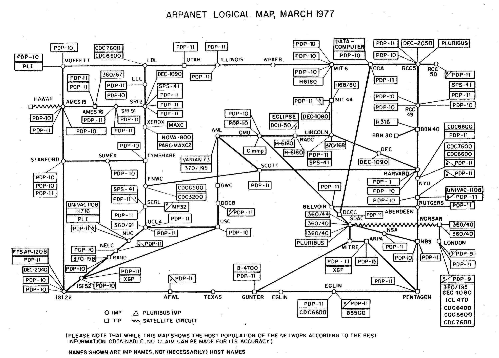

The Internet is an electronic communications network that connects computer networks and organizational computer facilities around the world (Merriam-Webster's Collegiate Dictionary, 1986). The Internet is made up of technology created by a variety of people and organizations. Robert W. Taylor, who oversaw the creation of the ARPANET (an early version of the Internet), as well as Vinton Cerf and Robert Kahn, who created the Transmission Control Protocol/Internet Protocol (TCP/IP) technologies, all played notable roles.
A series of memos made by J.C.R. Licklider of MIT in August 1962 outlining his "Galactic Network" concept was the first recorded description of the social interactions that may be facilitated by networking. Starting in October 1962, Licklider was the first director of DARPA's computer research program. While at DARPA, he persuaded Ivan Sutherland, Robert Taylor, and MIT researcher Lawrence G. Roberts, among others, of the importance of this networking idea. In July 1961, MIT's Leonard Kleinrock released the first article on packet switching theory, followed by a book in 1964. Kleinrock persuaded Roberts of the theoretical viability of utilizing packets rather than circuits for communications, which was a key step toward computer networking. In 1965, Roberts collaborated with Thomas Merrill to connect the TX-2 computer in Massachusetts to the Q-32 computer in California using a low-speed dial-up telephone connection, resulting in the world's first (though small) wide-area computer network. This experiment revealed that the time-shared computers could operate effectively together, running programs and obtaining data from the remote machine as needed, but that the circuit switched telephone system was completely unsuitable for the purpose. Kleinrock's belief on the importance of packet switching was confirmed (Leiner, B. 1997).
Roberts went to DARPA in late 1966 to create the computer network concept, and he rapidly put together his design for the "ARPANET," which he published in 1967. The Advanced Research Projects Agency Network (ARPANET), the precursor of the Internet, was a pioneering long-haul network financed by the United States Department of Defence. The ARPANET was created by connecting packet-switching computers through leased lines.
The ARPANET evolved into the Internet. The Internet as we know it now includes a fundamental technological concept known as open architecture networking. In this concept, any individual network technology may be chosen freely by a provider and configured to interact with other networks through a meta-level "Internetworking Architecture," rather than being imposed by a specific network architecture. In an open-architecture network, the individual networks may be separately designed and developed, and each may have its own unique interface which it may offer to users and/or other providers, including other Internet providers. Kahn initially proposed the concept of open-architecture networking shortly after joining DARPA in 1972.
between 1985 and 1986, The National Science Foundation (NSF) financed the first five supercomputing centres, which were located at Princeton University, the University of Pittsburgh, the University of California, San Diego, the University of Illinois, and Cornell University. The NSF also supported the creation and management of the NSFNET, a national "backbone" network that connected these centres in the 1980s. The network was running at millions of bits per second by the late 1980s. In the late 1980s, a few commercial networks also emerged, which were quickly joined by others, and the Commercial Internet Exchange (CIX) was created to enable transit traffic between commercial networks that would otherwise be prohibited on the NSFNET backbone.
Control of the Internet has since progressively transitioned from government stewardship to private-sector involvement, and eventually to private custody with government monitoring and forbearance, from its inception in the early 1970s.
Leiner, B. 1997. Internet Society. Brief History of the Internet. [ONLINE] Available at: https://www.internetsociety.org/internet/history-internet/brief-history-internet/. [Accessed 02 October 2021].